I got these images from the Palm emulator connecting from home over a modem to a web server in my office.
The application is a simple timecard entry function. The only change to a standard Palm VII is the loading of a single PQA, the "uim" application below (I haven't yet made an icon for it):
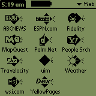
Tapping the "uim" icon brings up the connection screen. This is stored in the PQA; no network traffic yet.
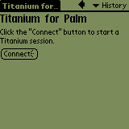
Tapping the "Connect" button communicates over the network. This connects to a Windows 98 machine in my office running the WebUIM application. It connects to the Progress AppServer running on an AIX machine, which opens the administration database, lookups the available databases, and returns some XML describing the screen. The web server then converts this XML into HTML, and sends it out over the web, resulting in this login screen.
From here on out, I'll show the GUI screens as well. These are generated by the identical server xml files, and execute the identical business logic.
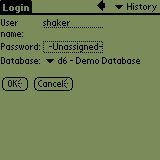
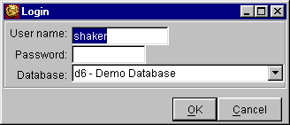
Eventually, the web server code will also run on the AIX machine, but IBM's Java 1.3 VM requires a newer version of AIX than is currently on that machine and we didn't want to destabilize it this close to our users conference (the application will be demoed there).
The "Password" field generates the following HTML:
The Palm displays this as the "-Unassigned-" box above and below. When you click on the box, a password entry dialog pops up. It echoes what you type so that you can see if you drew it correctly:<input type="password" ...>
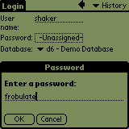
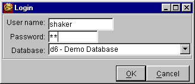
After tapping "OK" on the password entry dialog, the password box changes to "-Assigned-". You can select a database from the "Database" combo box, an HTML "select" input.
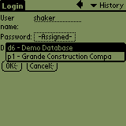
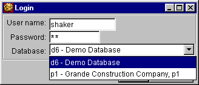
Tapping "OK" on the login screen goes back to the AppServer to validate the password. I haven't done the error screens yet. These appear as a dialog box in the Swing UI, but currently print an error backtrace in the web version. To be fixed. Once the password is validated, XML is sent back for the first application screen. This demo is a simple two-screen timecard entry application. The first screen collects header information. The label buttons here ("Payroll Company", "Batch Number", "Employee", "Cat") will eventually bring up a lookup screen where you can select from a list of valid entries. I haven't written the HTML version of the table component yet, so the lookup buttons don't yet work. The "Back" button here is supposed to be disabled, but the palm doesn't support the "disabled" attribute. I'll eventually special case the Palm's browser and hide disabled buttons.
Lookups are usually done with a button having a distinctive lookup icon. Since this is using the same XML as the web version, it has buttons for the lookups. They are set to be invisible unless you point at them with the mouse, as is done with the "Payroll Company" button below. If you really intended to use the same XML files for the Palm and the GUI, you'd probably leave these buttons with their borders visible all the time.
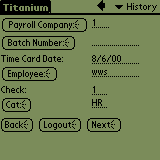
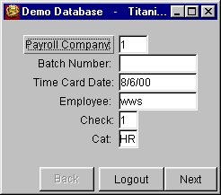
The second screen contains details for a single time card:
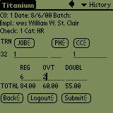
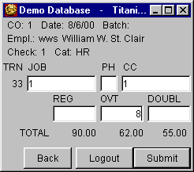
Tapping "OK" adds this timecard to the totals, and clears the input fields for the next timecard:
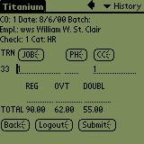
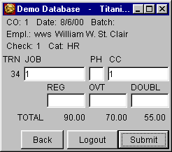
This application would be no big deal to create using standard dynamic web site tools. What is a big deal is that one set of XML screen descriptions and business logic create both a Java Swing GUI and a web site. Palm development requires more work, of course, since you have to make the output fit on that tiny screen, but you can create the screens with our User Interface Builder and debug them using the GUI before doing final tweaking in a standard web browser and then on the Palm itself.